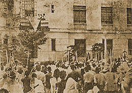

|
j
a v a s c r i p t |
Pg.1/2
December 21, 1944

Laurel at Patriotic Rally
Tribune: "President Laurel was given a prolonged applause by the big throng when he announced that he would do something in a few days for the people" — in his speech at the patriotic rally. An N.A. leader obliged to attend reported that Laurel said it would be for the safety of the people here. Aurelio Montinola, who recently changed his mind about going to Baguio, reported that Laurel had been in negotiations with the Japanese to make Manila an Open City. The Japanese would do it as a "magnanimous gesture" to spare Manila from destruction, it being the August wish of their Emperor that the Filipino people be protected as much as possible. The rub is they want Laurel to transfer his government to Baguio because the fight was to be continued in Northern Luzon at all costs — after all, didn't a state of war exist between the defenders and invaders? Laurel countered that the Japanese had criticized Quezon for leaving his people in times of stress, so how could he do the same now? Yamashita replied that Baguio was IN the Philippines, and the Emperor Himself had ordered him to safeguard and protect Laurel and his government with his very life. The talk then shifted to MANILA. The Philippine Constabulary refused to accept responsibility for peace and order here because they lacked arms and ammunition. It was then decided that the Kempeitai would remain to help maintain peace. Apparently it's all been arranged except for the announcement, which the Japanese will surely turn into a great propaganda stunt. Last night I was awakened three times by the sound of tanks, tractors and heavy equipment rolling up Santa Mesa on their way out of the city. The searchlights went on at 2100 when a lone B-24 plunked a bomb square on Nichols-Nielson. When it returned an hour later and circled over Pasay six times at low altitude, the searchlights remained off because the move was underway. Tribune: "Throng of 80,000 Affirms Existence of Filipino nation." The 80,000 were "invited" to attend; 8,000 showed up. |
|
|
|
|